“A única coisa a temer é o próprio medo” é um conselho estúpido.
Claro, não junte papel higiênico - mas se os governantes temem o próprio medo eles irão minimizar os reais perigos de “pânico em massa”. O medo não é o problema, mas, sim, como nós canalizamos nosso medo. O medo nos dá energia para lidar com os perigos agora, e se preparar para os perigos mais à frente.
Honestamente, nós (Marcel, epidemiologista + Nicky, artista/programador) estamos preocupados. Nós podemos apostar que você está também! Por isto nós canalizamos nosso medo para criar estas simulações lúdicas, para que você possa canalizar seu medo para entender:
- Os Últimos Meses (epidemiologia 101, modelo SEIR, R & R0)
- Os Próximos Meses (lockdowns, rastreamento de contato, máscaras)
- Os Próximos Anos (perda de imunidade? sem vacinas?)
Este guia (publicado em 1º de Maio de 2020. clique nesta nota de rodapé!→1) visa trazer para você esperança e medo. Para derrotar o COVID-19 de uma forma que também proteja nossa saúde mental e financeira, nós precisamos de otimismo para criar planos, e pessimismo para criar planos emergenciais. Como Gladys Bronwyn Stern disse uma vez, “O otimista inventa o avião e o pessimista o paraquedas.”
Então, apertem os cintos: nós estamos prestes a experimentar alguma turbulência.

Pilotos usam simuladores de vôo para aprender a não destruir aviões.
Epidemiologistas usam simuladores epidêmicos para aprender como não destruir a humanidade.
Então, vamos construir um “simulador de vôo epidêmico” muito, muito simples!,
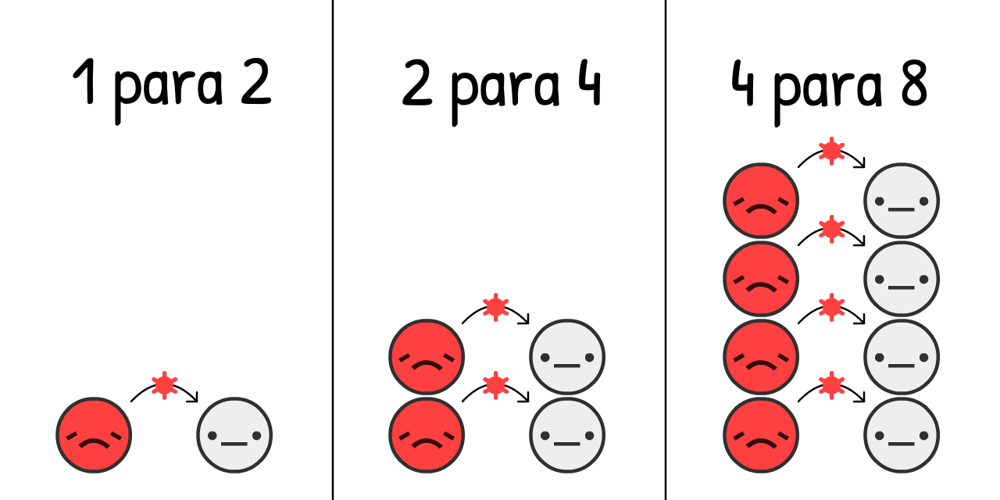
É estimado que, no início do surto de COVID-19, o vírus passa de uma
Se nós simularmos “dobra a cada 4 dias” e nada mais, em uma população, começando com apenas 0.001%
Clique “Iniciar” para rodar a simulação! Você pode rodar outras vezes com outros parâmetros: (ressalvas técnicas:3)
Esta é a curva de crescimento exponencial. Começa pequena, e então explode. “Oh é apenas uma gripe”para “Tá certo, gripes não criam cemitérios de valas comuns em cidades ricas”.
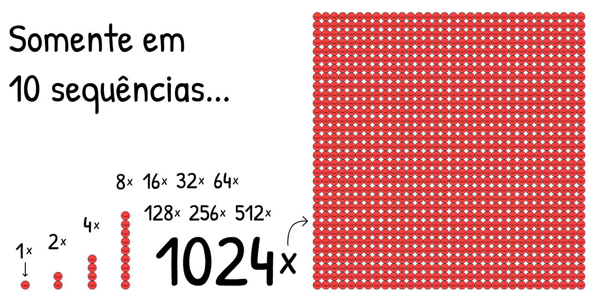
Mas, esta simulação está errada. O crescimento exponencial, ainda bem, não pode ser perpétuo. Uma razãopara impedir o espalhamento do vírus é se outras pessoas já tem o vírus:
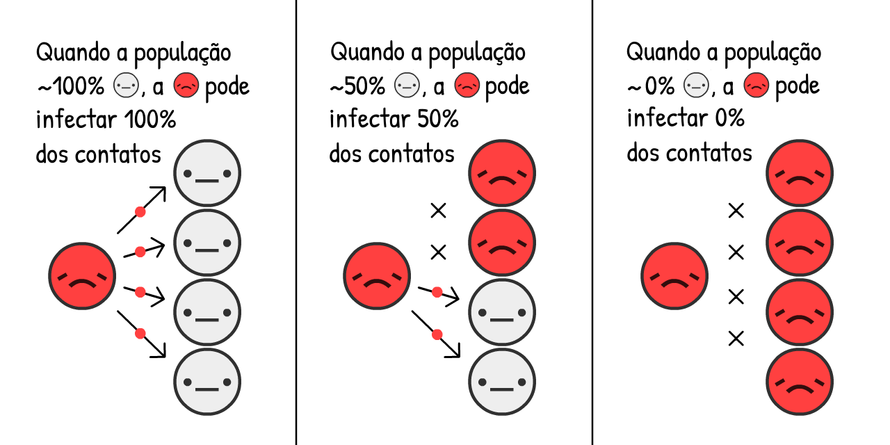
Quanto mais
Como isto muda o crescimento de uma epidemia? Vamos descobrir:
Esta é a curva de crescimento logístico. em formato de S. Começa devagar, explode, e desacelera de novo.
Mas, esta simulação ainda está errada. Nós estamos esquecendo o fato que
Por questão de simplicidade, vamos fingir que todas as
No caso da COVID-19, é estimado que você permaneça
Isto é o oposto do crescimento exponencial, a curva de decaimento exponencial.
Agora, o que acontece se você simular crescimento logístico em formato de S com a recuperação?

Vamos descobrir.
Curva vermelha são os casos atuais
Curva cinza é o total de casos (atuais + recuperados
E é daí que esta famosa curva veio! Não é uma curva em sino, e não é nem mesmo uma curva “log-normal”. Ela não tem nome. Mas você já deve ter visto um zilhão de vezes, e torcido muito para que ela achatasse.
Este é o Modelo SIR,5
(
a segunda idéia mais importante em Epidemiologia 101:
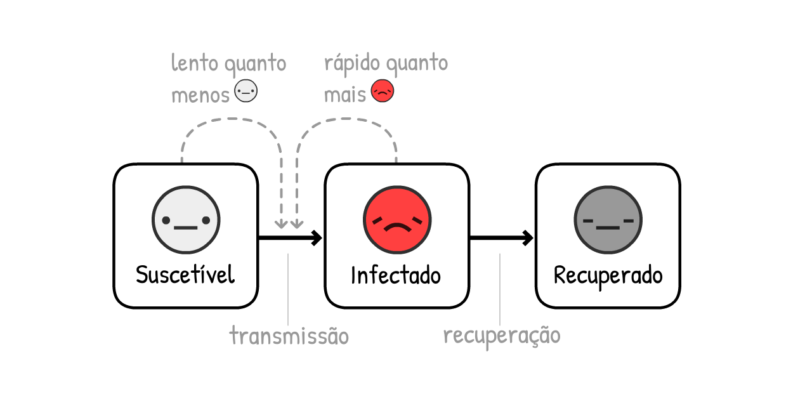
NOTA: A simulações que informam as políticas são muito, muito mais sofisticadas que isto! Mas o Modelo SIR ainda serve para encontrarmos as mesmas conclusõesgerais, mesmo que deixando passar algumas nuances.
De fato, vamos acrescentar uma nuance adicional: antes de um
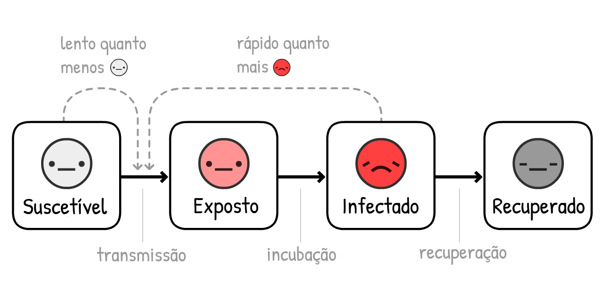
(Esta variante é chamada o Modelo SEIR6, onde o “E” significa
No caso da COVID-19, é estimado que você fique
Curva Vermelha + Rosa são os casos atuais (infeccioso
Curva cinza são casos totais (atuais + recuperados
Não há muitas mudanças! O tempo que você permanece
Por que isto acontece? Por causa da mais importante idéia em Epidemiologia 101:

Abreviação de “Número de reprodução”. É o número médio de pessoas que um
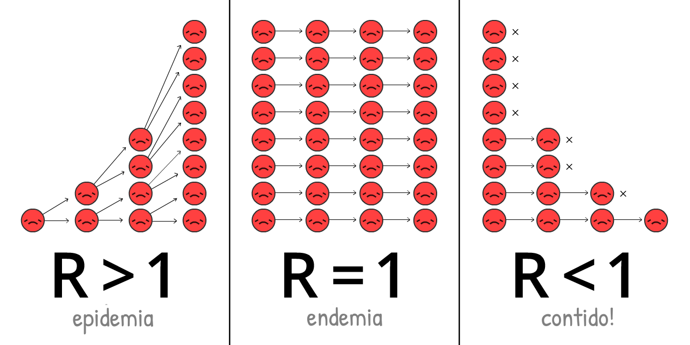
R muda durante o curso de um surto, já que ganhamos mais imunidade e intervenções.
R0 (pronounced R-nought) is what R is at the start of an outbreak, before immunity or interventions. R0 more closely reflects the power of the virus itself, but it still changes from place to place. For example, R0 is higher in dense cities than sparse rural areas.
(Most news articles – and even some research papers! – confuse R and R0. Again, science terminology is bad)
The R0 for “the” seasonal flu is around 1.288. This means, at the start of a flu outbreak, each
The R0 for COVID-19 is estimated to be around 2.2,9 though one not-yet-finalized study estimates it was 5.7(!) in Wuhan.10
Nas nossa simulações – no início & na média – um
Brinque com esta calculadora de R0, para ver como R0 depende dos tempos de recuperação e nova infecção:
But remember, the fewer
Mas lembre-se, quanto menos
When enough people have immunity, R < 1, and the virus is contained! This is called herd immunity. For flus, herd immunity is achieved with a vaccine. Trying to achieve “natural herd immunity” by letting folks get infected is a terrible idea. (But not for the reason you may think! We’ll explain later.) Quando pessoas suficientes tem imunidade, R < 1, e o vírus é contido! Isto é chamado imunidade de rebanho. Para gripes, a imunidade de rebanho é atingida com uma vacina. Tentando atingir “imunidade de rebanho natural” deixando as pessoas se infectarem é uma idéia terrível. (Mas não pelas razões que você pode pensar! Explicaremos mais a frente.)
Vamos rodar o Modelo SEIR outra vez, mas mostrando R0, R ao longo do tempo, e o limiar de imunidade de rebanho:
NOTA: O total de casos não para na imunidade de rebanho, mas ultrapassa ele! E ele cruza o limiar exatamente quando os casos correntes atingem o pico. (Isto acontece não importa como você mude os ajustes - tente você mesmo!)
Isto ocorre porque quando há mais não-
Se houver apenas uma lição para você tirar deste guia é esta - é um diagrama extremamente complexo, então tome um tempo para absorvê-lo completamente:
Isto significa: nós NÃO precisamos impedir todas as transmissões, ou nem mesmo algo próximo de todas as transmissões, para parar o COVID-19!
É um paradoxo. COVID-19 é extremamente contagioso, porém para contê-lo, nós “só” precisamos impedir 60% das infecções. 60%?! Se fosse uma nota no boletim seria um D-. Mas se R0 = 2.5, cortando isto por 61% nós temos R = 0.975, que é R < 1, vírus contido! (fórmula exata:12)
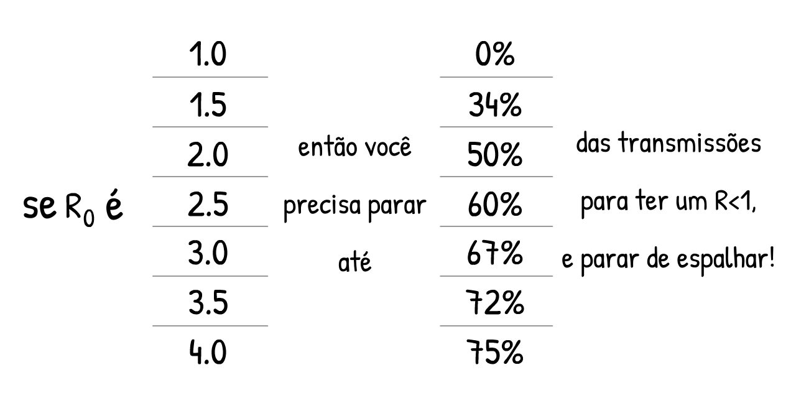
(Se você pensa que R0 ou outros números nas nossas simulações são muito baixos/altos, isto é bom pois está desafiando nossas premissas! Haverá um “Modo Caixa de Areia” no fim deste guia, onde você poderá inserir os seus próprios números, e simular o que acontece.)
Cada intervenção sobre COVID-19 que você já ouviu sobre - lavar as mãos, distanciamento social/físico, lockdowns, auto-isolamento, rastreamento de contatos e quarentena, máscaras faciais, e mesmo “imunidade de rebanho” - todas estão visando a mesma coisa:
Fazer R < 1.
Então agora, vamos usar nosso “simulador de vôo epidemico” para descobrir o seguinte: Como podemos conseguir ter R < 1 de uma forma que também proteja nossa saúde mental e financeira?
Preparem-se para uma aterrisagem de emergência…
Os Próximos Meses
…poderia ter sido pior. Aqui está um universo paralelo que evitamos:
###Cenário 0: Não Fazer Absolutamente Nada
Perto de 1 em cada 20 pessoas infectadas com COVID-19 precisam ir para um UTI(Unidade de Terapia Intensiva.)13 Em um país rico como os EUA, há 1 cama de UTI para cada 3400 pessoas. 14 Portanto os EUA podem tratar 20 de 3400 pessoas simultaneamente infectadas - ou 0.6% da população.
Mesmo se nós mais que triplicarmos esta capacidade para 2%, aqui está o que aconteceria se não fizessemos absolutamente nada:
Nada bom.
Isto é o que o relatório do Imperial College em 16 de março descobriu: se não fizessemos nada ficaríamos sem camas de UTI, com mais de 80% da população infectada. (lembre-se: o número total de casos ultrapassa a imunidade de rebanho).
Mesmo se apenas 0.5% dos infectados morressem - uma suposição generosa quando não há mais vagas na UTI - em um país grande como os EUA, com 300 milhões de pessoas, 0.5% de 80% de 300 milhões = ainda são 1.2 milhões de mortos… SE não fizessemos nada.
(Muitos canais de notícia e mídia social reportaram “80% serão infectados” SEM o “SE NÃO FIZERMOS NADA”. O medo foi canalizado em clicks, e não para o entendimento. Suspiro.)
###Cenário 1: Achatar a Curva / Imunidade de Rebanho
O plano de “Achatar a Curva” foi apregoado por todas as organizações de saúde pública, enquanto que o plano original de “imunidade de rebanho” do Reino Unido era universalmente vaiado. Eles eram o mesmo plano. O Reino Unido apenas comunicou mal seu plano.[^yong]
“Ele diz que a meta real é a mesma dos outros países: achatar a curva ao escalonar o início as infecções. Como consequência, a nação deve atingir imunidade de rebanho; é um efeito colateral, e não um objetivo. […] O verdadeiro plano de ação para o coronavírus do gorverno, disponível online, não menciona imunidade de rebanho em nenhum lugar.”"
Do [artigo de Ed Yong para o The Atlantic](https://www.theatlantic.com/health/archive/2020/03/coronavirus-pandemic-herd-immunity-uk-boris-johnson/608065/)Ambos os planos, entretanto, tinham literalmente uma falha fatal.
Primeiro, vamos olhar nas duas principais formas de “achatar a curva”: lavar as mãos e distanciamento físico.
O aumento da lavagem das mãos corta a incidência de gripes e resfriados em países de alta renda em ~25%15, enquanto o lockdown de toda a cidade de Londres corta os contatos próximos em ~70%16. Então, vamos assumir que a lavagem de mãos pode reduzir R em até 25%, e o distanciamento pode reduzir R em até 70%:
Brinque com esta calculadora para ver qual o % de non-
Agora, vamos simular o que acontece com uma epidemia de COVID-19 se, começando em março de 2020, nós tivessemos aumentado a lavagem de mãos mas adotado apenas leve distanciamento físico - de tal forma que R é mais baixo, mas ainda acima de 1:
Três notas:
Isto reduz o total de casos! Mesmo se você não consegue R < 1, reduzindo R ainda salva vidas, ao reduzir o tanto que se ultrapassa sobre a imunidade de rebanho. Muitos pensam que “Achatar a Curva” espalha os casos sem reduzir o seu número total. Isto é impossível em qualquer modelo em Epidemiologia 101. Mas como a mídia reportou “mais de 80% serão infectados” como inevitável, as pessoas pensam que o número total de casos será o mesmo não importando nada. Suspiro.
Devido as intervenções extra, os casos correntes atingem o pico antes que a imunidade de rebanho seja alcançada. De fato, nesta simulação, o número total de casos apenas ultrapass um pouco acimna da imunidade de rebanho - o plano do Reino Unido! Neste ponto, R < 1, você pode descartar todas as outras intervenções, e a COVID-19 permanece contida! Bem, exceto por um problema…
Você continua sem leitos de UTI. Por vários meses. (e lembre-se, nós já triplicamos as UTIs nestas simulações)
Este foi o outro achado do relatório do Imperial College em 16 de março, que convenceu o Reino Unido a abandonar o plano original. Qualquer tentativa de mitigação (reduzir R, mas com R>1) iria falhar. A única saída seria supressão (reduzir R de forma que R < 1).
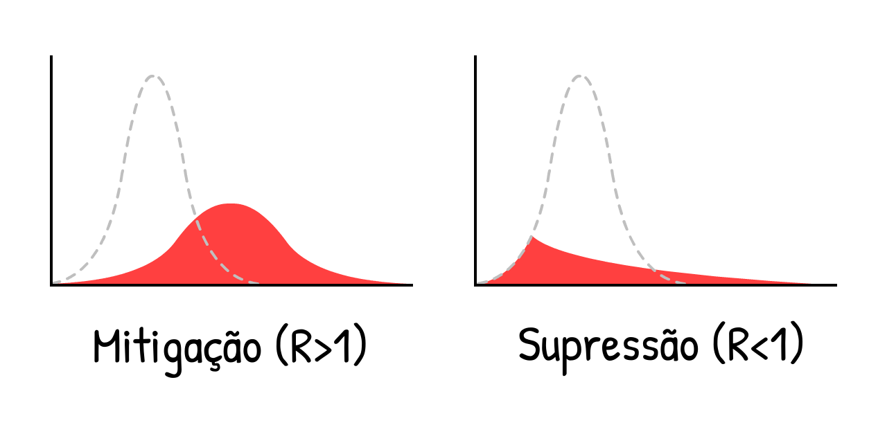
Isto é, não apenas “achate” a curva, esmague a curva. Por exemplo, com um…
###Cenário 3: Lockdown de Meses
Vamos ver o que acontece se nós esmagamos a curva com um lockdown de 5 meses, reduzindo
Oh.
Esta é a “segunda onda” que todo mundo está falando a respeito. Assim que removemos o lockdown, nós voltamos a ter R > 1 de novo. Então, um único
Um lockdown não é a cura, ele é apenas um reinício.
Então o que? Nós apenas entramos em lockdown de novo e de novo?
###Cenário 3: Lockdown Intermitente
Esta solução foi sugerida inicialmente pelo relatório do Imperial College de 16 de março, e de novo por um artigo de Harvard.18
Aqui está uma simulação: (Depois de brincar com o “cenário gravado”, você pode tentar simular seus próprios cronogramas de lockdown, mudando os cursores enquanto a simulação está rodando! Lembre-se que você pode parar e continuar a simulação, e alterar a sua velocidade).
Isto iria manter os casos abaixo da capacidade das UTIs! E é muito melhor que um lockdown de 18 meses até que uma vacina esteja disponível. (E se não houver vacina, repita até que a imunidade de rebanho seja atingida… em 2022.)
Veja, é legal desenhar uma linha dizendo “capacidade das UTIs”, mas tem várias coisas importantes que nós não podemos simular aqui. Como:
Saúde Mental: Solidão é um dos maiores fatores de risco para depressão, ansiedade, e suicídio. E está tão associado com a morte prematura quanto fumar 15 cigarros por dia.[^loneliness]
Veja Figure 6 from Holt-Lunstad & Smith 2010. Claro, grande ressalva que eles encontraram uma correlação. Mas a não ser que você queira tentar aleatóriamente designar pessoas para serem solitárias a vida toda evidência de observação é tudo que você pode ter.
Saúde Financeira: “E a respeito da economia” soa como se você se importasse mais com dólares que com vidas, mas “a economia” não é apenas a bolsa de valores: é a capacidade das pessoas prover comida e abrigo para os seus entes queridos, para investir no futuro dos seus filhos, e desfrutar de artes, comidas, videogames - as coisas que fazem a vida valer a pena. E além disto, pobreza por si só tem impactos horríveis na saúde mental e física.
Não estou dizendo que nós não devamos ter outro lockdown! Nós iremos falar de lockdowns “disjuntores” depois. De toda forma não é o ideal.
Mas espere… Formosa e a Coréia do Sul não contiveram a COVID-19? Por 4 meses inteiros sem quarentenas de longo prazo?
Como?
###Cenário 4: Teste, Rastreie, Isole
“Claro, nós *poderíamos* ter feito o que Formosa e Coréia do Sul fizeram desde o início, mas agora é tarde demais. Nós perdemos a largada.”
Mas é exatamente isto! “Uma quarentena não é a cura, é apenas um recomeço”… e um recomeço do zero é tudo que precisamos.
Para entender como Formosa e Coréia do Sul contiveram o COVID-19, nós necessitaríamos entender a exata linha do tempo de uma típica infecção de COVID-1919:
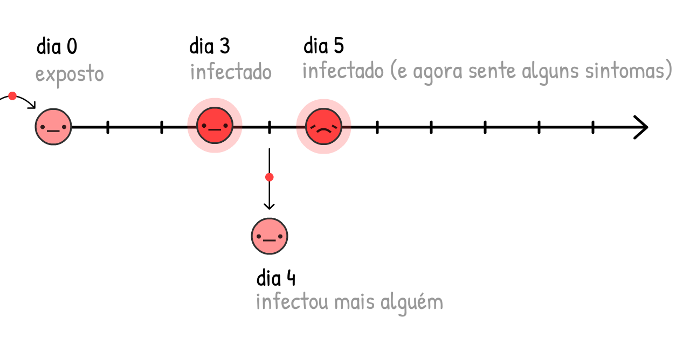
Se os casos só se auto-isolam quando eles sabem que estão doentes (isto é, eles sentem sintomas), o vírus ainda pode se espalhar:
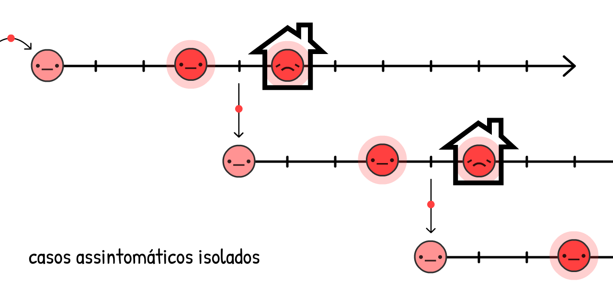
E de fato, 44% de todas as transmissões são assim: pré-sintomáticas! 20
Mas, se nós encontrarmos e colocarmos em quarentena os contatos próximos recentes de um caso sintomático… nós paramos o espalhamento, por estar um passo a frente!
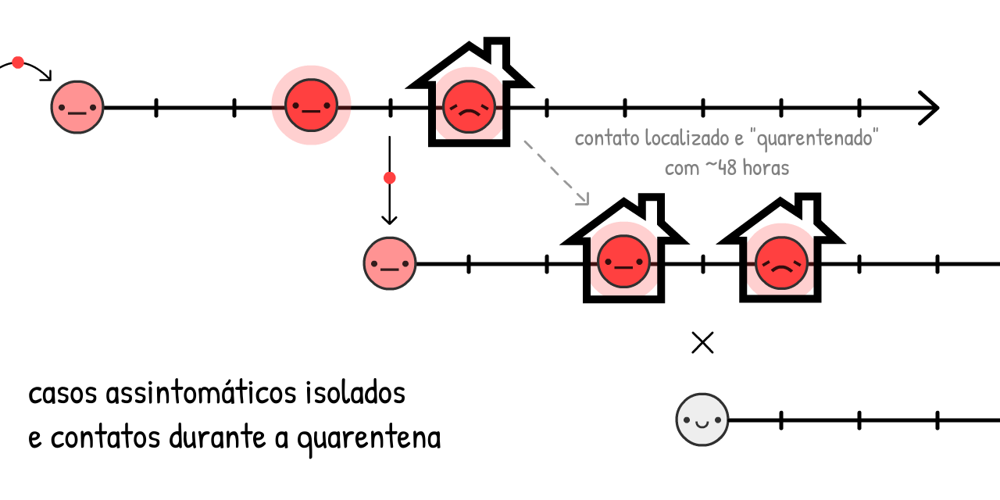
Isto é chamado rastreamento de contato. É uma idéia antigaa, que foi utilizada em uma escala sem precedentes para conter o Ebola21, e agora é parte central de como Formosa e Coréia do Sul estão contendo o COVID-19!
(Isto também permite que utilizemos nossos recursos de teste limitados de forma mais eficiente, para encontrar
Tradicionalmente, os contatos são encontrados com entrevistas pessoais, mas estas sozinhas são muito lentas para a janela de ~48h do COVID-19. Este é o motivo pelo qual os rastreadores de contato precisam de ajuda, e serem auxíliados por - NÃO substituídos por - apps de rastreamento de contatos.
(Esta idéias não surgiu de “techies”: usar um app para lutar contra o COVID-19 foi proposto por um time de epidemiologistas de Oxford.)
Mas espere aí, apps que rastreiam com quem você esteve em contato?… Isto significa abrir mão da sua privacidade, sucumbindo ao Big Brother?
Nada disto! DP-3T, um time de epidemiologistas e criptografos (incluindo um de nós, Marcel Salathé) já está desenvolvento um app de rastreamento de contatos - com o código disponível para o público - que não revela nenhuma informação sobre a sua identidade, localização, quem são seus contatos, ou nem mesmo quantos contatos você teve.
Aqui está como ele funciona:
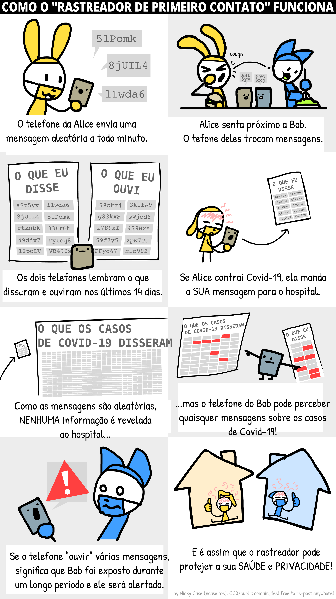
(& e aqui está o quadrinho completo)
Junto com times similares como o protocolo TCN22 e MIT PACT23, eles inspiraram a Apple e o Google para inserir o rastreamento de contatos, com prioridade na privacidade, diretamente no Android/iOS.24 (Você não confia no Google/Apple? Ótimo! A beleza deste sistema é que ele não precisa de confiança!) Em breve sua agência de saúde pública local pode solicitar que você baixe um app. Se ele colocar privacidade em primeiro lugar, com código-fonte público por favor faça!
Mas e as pessoas que não tem smartphones? Ou as infecções por maçanetas de portas? Ou casos “verdadeiramente” assintomáticos? Os apps de rastreamento de contatos não podem pegar todas estas transmissões… e isto não é problema! Nós não precisamos pegar todas as transmissões, apenas 60%+ para conseguir R < 1.
(Resmungo sobre a confusão a respeito de casos pré-sintomáticos vs “verdadeiramente” assintomáticos. “Verdadeiramente” assintomáticos são raros:25)
O isolamento de casos sintomáticos reduziria R em cerca de 40%, e colocando em quarentena os seus contatos pré-sintomáticos ou assintomáticos reduziria R em até 50%26:
Então, mesmo sem 100% de distanciamento, nós podemos chegar a R < 1 sem um lockdown! Muito melhor para a nossa saúde mental e financeira. (E para os custos das pessoas que tiverem que se auto-isolar/entrar em quarentena, os governos devem sustentá-los - pagar pelos testes, proteger seus empregos, subsidiar licenças remuneradas, etc. Ainda será muito mais barato que lockdown intermitente.)
Se nós mantivermos R < 1 até que nós tenhamos uma vacina, que tornará suscetíveis
(Note: this calculator pretends the vaccines are 100% effective. Just remember that in reality, you’d have to compensate by vaccinating more than “herd immunity”, to actually get herd immunity)
Okay, enough talk. Here’s a simulation of:
- A few-month lockdown, until we can…
- Switch to “Test, Trace, Isolate” until we can…
- Vaccinate enough people, which means…
- We win.
So that’s it! That’s how we make an emergency landing on this plane.
That’s how we beat COVID-19.
…
But what if things still go wrong? Things have gone horribly wrong already. That’s fear, and that’s good! Fear gives us energy to create backup plans.
The pessimist invents the parachute.
###Scenario 4+: Masks For All, Summer, Circuit Breakers
What if R0 is way higher than we thought, and the above interventions, even with mild distancing, still aren’t enough to get R < 1?
Remember, even if we can’t get R < 1, reducing R still reduces the “overshoot” in total cases, thus saving lives. But still, R < 1 is the ideal, so here’s a few other ways to reduce R:
Masks For All:
“Wait,” you might ask, “I thought face masks don’t stop you from getting sick?”
You’re right. Masks don’t stop you from getting sick27… they stop you from getting others sick.
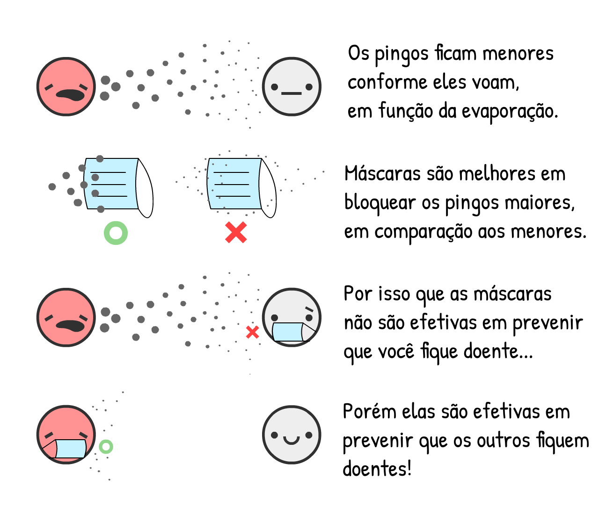
To put a number on it: surgical masks on the sick person reduce cold & flu viruses in aerosols by 70%.28 Reducing transmissions by 70% would be as large an impact as a lockdown!
However, we don’t know for sure the impact of masks on COVID-19 specifically. In science, one should only publish a finding if you’re 95% sure of it. (…should.29) Masks, as of May 1st 2020, are less than “95% sure”.
However, pandemics are like poker. Make bets only when you’re 95% sure, and you’ll lose everything at stake. As a recent article on masks in the British Medical Journal notes,30 we have to make cost/benefit analyses under uncertainty. Like so:
Cost: If homemade cloth masks (which are ~2/3 as effective as surgical masks31), super cheap. If surgical masks, more expensive but still pretty cheap.
Benefit: Even if it’s a 50–50 chance of surgical masks reducing transmission by 0% or 70%, the average “expected value” is still 35%, same as a half-lockdown! So let’s guess-timate that surgical masks reduce R by up to 35%, discounted for our uncertainty. (Again, you can challenge our assumptions by turning the sliders up/down)
(other arguments for/against masks:32)
“They’re hard to wear correctly.” It’s also hard to wash your hands according to the WHO Guidelines – seriously, “Step 3) right palm over left dorsum”?! – but we still recommend handwashing, because imperfect is still better than nothing.
“It’ll make people more reckless with handwashing & social distancing.” Sure, and safety belts make people ignore stop signs, and flossing makes people eat rocks. But seriously, we’d argue the opposite: masks are a constant physical reminder to be careful – and in East Asia, masks are also a symbol of solidarity!
Masks alone won’t get R < 1. But if handwashing & “Test, Trace, Isolate” only gets us to R = 1.10, having just 1/3 of people wear masks would tip that over to R < 1, virus contained!
Summer:
Okay, this isn’t an “intervention” we can control, but it will help! Some news outlets report that summer won’t do anything to COVID-19. They’re half right: summer won’t get R < 1, but it will reduce R.
For COVID-19, every extra 1° Celsius (2.2° Fahrenheit) makes R drop by 1.2%.33 The summer-winter difference in New York City is 15°C (60°F), so summer will make R drop by 18%.
Summer alone won’t make R < 1, but if we have limited resources, we can scale back some interventions in the summer – so we can scale them higher in the winter.
A “Circuit Breaker” Lockdown:
And if all that still isn’t enough to get R < 1… we can do another lockdown.
But we wouldn’t have to be 2-months-closed / 1-month-open over & over! Because R is reduced, we’d only need one or two more “circuit breaker” lockdowns before a vaccine is available. (Singapore had to do this recently, “despite” having controlled COVID-19 for 4 months. That’s not failure: this is what success takes.)
Here’s a simulation a “lazy case” scenario:
- Lockdown, then
- A moderate amount of hygiene & “Test, Trace, Isolate”, with a mild amount of “Masks For All”, then…
- One more “circuit breaker” lockdown before a vaccine’s found.
Not to mention all the other interventions we could do, to further push R down:
- Travel restrictions/quarantines
- Temperature checks at malls & schools
- Deep-cleaning public spaces
- Replacing hand-shaking with foot-bumping
- And all else human ingenuity shall bring
. . .
Nós esperamos que estes planos dêem esperança para você.
Mesmo em um cenário pessimista é possível bater o COVID-19, enquanto protegemos nossa saúde mental e financeira. Usando o lockdown como um “botão de reinício”, mantendo R < 1 com isolaamento de casos + rastreamento de contatos que proteja a privacidade + pelo menos máscaras de pano para todos… e a vida pode voltar a uma normalidade!
Claro, você pode terá suas mãos ressecadas, mas você poderá convidar alguém para um encontro em uma livraria de histórias em quadrinhos! Você poderá sair com amigos para assistir o último caça-níqueis de Hollywood. Você poderá ficar observando as pessoas em uma livraria, ficando alegre de vê-las fazendo coisas simples como estarem vivas..
Mesmo no cenário de pior caso… a vida persevera.
Então agora vamos planejar para alguns dos piores cenários dentre os de pior caso. Aterrisando na água, pegue seu colete de sobrevivência, e por favor siga as luzes para as saídas de emergência:
Os Próximos Anos
Se você tiver COVID-19, e se recuperar. Ou tomar a vacina da COVID-19. De qualquer forma você agora estará imune…
…por quanto tempo?
- COVID-19 é mais similar ao SARS, que dava aos seus sobreviventes 2 anos de imunidade.[^SARS immunity]
- Os coronavírus que causam “o” resfriado comum dão a você 8 meses de imunidade.[^cold immunity]
- Há relatos de pessoas recuperadas do COVID-19, que depois voltam a testar positivo, mas ainda é incerto se estes são falsos positivos.34
- Um estudo ainda-não-revisado-por-pares em macacos mostrou imunidade ao coronavírus do COVID-19 por pelo menos 28 dias.35
Mas para o COVID-19 em humanos, em 1 de maio de 2020, o “quanto tempo” é a grande dúvida.
[^SARS immunity]: “Anticorpos específicos para o SARS foram mantidos por uma média de 2 anos […] Então pacientes do SARS devem ser suscetíveis a reinfecção ≥3 anos depois da exposição inicial.” Wu LP, Wang NC, Chang YH, et al. “Infelizmente” nós nunca saberemos por quanto tempo a imunidade do SARS teria realmente durado já que a erradicamos tão rapidamente.
[^cold immunity]: “Nós não encontramos nenhuma diferença significativa entre a probabilidade de testar positivo pelo menos uma vez e a probabilidade de recorrência para os beta-coronavírus HKU1 e OC43 em 34 semanas depois da inscrição/primeira infecção.” Marta Galanti & Jeffrey Shaman (PDF)
Para estas simulações, digamos é um ano. Aqui temos uma simulação iniciando com 100%
O Retorno do decaimento exponencial!
Este é o Modelo SEIRS. O último “S” significa
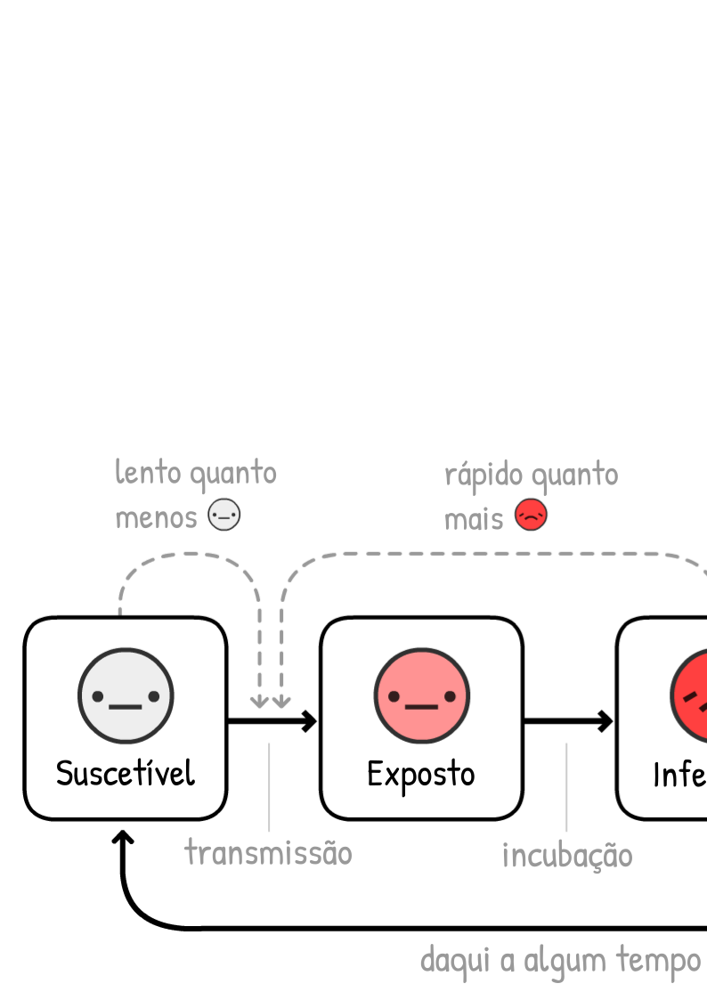
Agora vamos simular um surto de COVID-19, no período de 10 anos, sem intervenções… se a imunidade durar apenas um ano:
Nas simulações prévias, nós tinhamos apenas um pico de superlotação das UTIs. Agora nós temos vários, e
R = 1, é endêmico.
Felizmente, como o verão reduz o R isto melhorará a situação:
Oh.
Contraintuitivamente, o verão faz os surtos piores e regulares! Isto acontece por que o verão reduz novos
Por sorte, a solução é bem direta - apenas vacines as pessoas todo outono/inverno, como nós fazemos com as vacinas da gripe:
(Depois de rodar a simulação padrão tente simular suas próprias campanhas de vacinação! Lembre-se que você pode pausar/continuar a simulação a qualquer momento)
Mas aqui vai uma questão mais assustadora:
E se não houver vacina por anos? Ou nunca?
Para deixar claro: isto é improvável. A maior parte dos epidemiologistas espera uma vacina em 1 ou 2 anos. Claro, nunca houve uma vacina para outro coronavírus antes, mas por que a SARS foi erradicada rapidamente, e “a” gripe comum não vale o investimento.
Ainda, pesquisadores de doenças infecciosas expressaram preocupações: E se nós não pudermos fazer a quantidade suficiente?36 E se nós corrermos com ela, e ela não for segura?37
Mesmo no cenário de pesadelo de “sem vacinas”, nós ainda temos 3 saídas. Da mais para a menos terrível:
Fazer intervenções R < 1, intermitentes ou avulsas, para atingir a “imunidade de rebanho natural”. (Aviso: isto resultará em muitas mortes e pulmões lesionados). E não irá funcionar se a imunidade não durar.)
Fazer intervenções R < 1 para sempre. Rastreamento de contatos e usar máscaras simplesmente se tornará a nova norma no mundo pós-COVID-19, como testes para DST e usar camisinhas se tornaram a nova norma no mundo pós-HIV.
Fazer intervenções R < 1 até que nós desenvolvamos tratamentos que façam a COVID-19 muito, muito menos provável de precisar de cuidados intensivos. (O que nós devemos já estar fazendo de qualquer forma!) Reduzindo o uso de UTIs por um fator de 10x é o mesmo que aumentar nossa capacidade de leitos de UTI em 10x:
Aqui está uma simulação de imunidade não duradoura, sem vacinas, e mesmo sem nenhuma intervenção - apenas incrementando lentamente a capacidade de sobrevivência aos surtos de longo prazo:
Até mesmo sob o cenário de pior caso… a vida persevera.
. . .
Talvez você goste de desafiar nossas premissas, e tentar R0’s ou números diferentes. Ou tentar simular suas próprias combinações de planos de intervenção!
Aqui está um Modo de Caixa de Areia(optional), com tudo disponível. (role a tela para ver todos os controles) Simule e brinque a vontade:
Este “simulador de vôo epidemico” básico nos ensinou tanto. Ele nos permite responder questões sobre nossos últimos meses, os próximos meses, e os próximos anos.
Então finalmente, vamos retornar para…
O Agora
O avião afundou. Nós subimos nos botes salva-vidas. É hora de encontrar terra firme.38
Equipes de epidemiologistas e governantes (left, right, e multi-partisan) chegaram a um consenso em como bater a COVID-19, enquento protegem nossas vidas e liberdades.
Aqui segue uma idéia geral, com alguns (menos consensuais) planos de emergência:
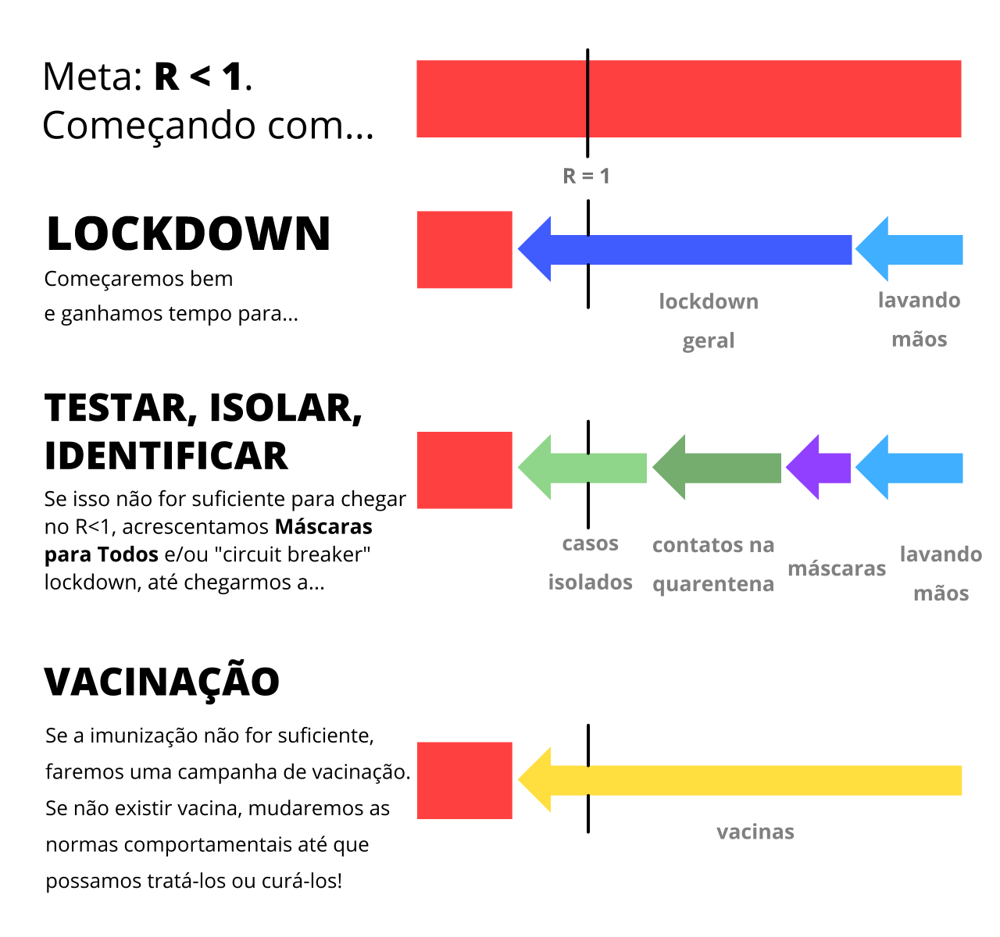
Então o que isto significa para VOCÊ, agora?
Para todo mundo Respeite a quarentena para que nós possamos sair da Fase I tão logo quanto possível. Continue lavando as suas mãos. Faça suaa própria máscara. Baixe um app de rastreamento de contatos que protejam identidades quando estes estiverem disponíveis no próximo mês. Se mantenha física e mentalmente saudável! E escreva para seu legislador local para levantar a bunda da cadeira e…
Para legisladores: Crie leis que deem suporte a quem tem que se isolar/ficar em quarentena. Contrate mais rastreadores de contato manuais, auxiliados por app de rastreamento de contatos que protejam identidades. Direcione mais fundos para as coisas que deveríamos estar fazendo, tais como…
Para produtores: Produzam testes. Produzam respiradores. Produzam equipamentos de proteção para hospitais. Produzam testes. Produzam máscaras. Produzam apps. Produzam antivirais, profiláticos, e outros tratamentos que não são vacinas. Produzam vacinas. Produzam testes. Produzam testes. Produzam testes. Produzam esperança.
Não minimize o medo para construir esperança. Nosso medo deve trabalhar junto com nossa esperança, como os inventores de aviões e paraquedas. Se preparar para futuros horríveis é como nós criamos um futuro de esperança.
A única coisa a temer é a idéia que a única coisa a temer é o próprio medo.
Estas notas de rodapé terão fontes, links ou comentário bônus. Como este comentário!
Este guia foi publicado em 1º de maio de 2020. Muitos detalhes irão se tornar desatualizados, mas nós estamos confiantes que o guia cobrirá 95% dos futuros possíveis, e que Epidemiologia 101 será útil para sempre.↩︎
“The mean [serial] interval was 3.96 days (95% CI 3.53–4.39 days)”. Du Z, Xu X, Wu Y, Wang L, Cowling BJ, Ancel Meyers L (Disclaimer: Early release articles are not considered as final versions)↩︎
Lembre-se: todas estas simulações são super simplificadas, para propósitos educacionais. Uma simplificação: Quando você pede que a simulação “Infecte 1 nova pessoa a cada x dias”, ele de fato está aumentando o número de infectados 1/x a cada dia. O mesmo ocorre para os demais ajustes destas simulações. - “Recuperar a cada x dias” está de fato reduzindo o número de infectados 1/x a cada dia.
Estas não são exatamente as mesmas coisas, mas são próximas o suficiente, e para propósitos educacionais é menos obscuro que ajustar as taxas de transmissão e recuperação diretamente.↩︎
“The median communicable period […] was 9.5 days.” Hu, Z., Song, C., Xu, C. et al Yes, we know “median” is not the same as “average”. For simplified educational purposes, close enough.↩︎
Para mais explicações técnicas do Modelo SIR, veja the Institute for Disease Modeling e Wikipedia↩︎
Para mais explicações técnicas do Modelo SEIR, veja the Institute for Disease Modeling e Wikipedia↩︎
“Assumindo uma distribuição do período de incubação de 5.2 dias, em média, resultado de um estudo em separado dos primeiros casos de COVID-19, nós inferimos que o contágio começa a partir de 2.3 dias ((95% IC, 0.8-3.0 dias) antes dos sintomas se instalarem.” (traduzindo: assumindo que os sintomas começam no dia 5, o contágio começa 2 dias antes = contágio começa no dia 3) He, X., Lau, E.H.Y., Wu, P. et al.↩︎
“The median R value for seasonal influenza was 1.28 (IQR: 1.19–1.37)” Biggerstaff, M., Cauchemez, S., Reed, C. et al.↩︎
“We estimated the basic reproduction number R0 of 2019-nCoV to be around 2.2 (90% high density interval: 1.4–3.8)” Riou J, Althaus CL.↩︎
“we calculated a median R0 value of 5.7 (95% CI 3.8–8.9)” Sanche S, Lin YT, Xu C, Romero-Severson E, Hengartner N, Ke R.↩︎
Isto é assumindo que você é igualmente infeccioso durante todo o “período infeccioso”. Mais uma vez simplificações para propósitos educacionais.↩︎
Lembre-se R = R0 * a proporção das transmissões ainda permitidas. Lembre-se ainda que a proporção das transmissões ainda permitidas = 1 - proporção das transmissões impedidas.
Logo, para ter R < 1, você precisa ter R0 * TransmissõesPermitidas < 1.
Logo, TransmissõesPermitidas < 1/R0
Logo, 1 - TransmissõesImpedidas < 1/R0
Logo, TransmissõesImpedidas > 1 - 1/R0
Logo, você precisa parar mais que 1 - 1/R0 das transmissões para conseguir R < 1 e conter o vírus!↩︎
“Percentage of COVID-19 cases in the United States from February 12 to March 16, 2020 that required intensive care unit (ICU) admission, by age group”. Entre 4.9% e 11.5% de todos os casos de COVID-19 requereram UTI. Generosamente escolhendo a faixa inferior, isto significa 5% ou 1 em 20. Note que este total é específico para a estrutura etária dos EUA, e será maior em países com populações mais velhas, e menor em países com populações mais jovens.↩︎
“Números de camas de UTI = 96,596”. Em the Society of Critical Care Medicine População dos EUA era 328.200.000 em 2019. 96.596 de cada 328,200,000 = aproximadamente 1 em 3400.↩︎
“Todos os oito estudos elegíveis reportaram que lavagem de mãos reduziram os riscos de infecção respiratória, com redução de riscos entre 6% a 44% [valor agrupado 24% (95% IC 6-40%)].”Nós arredondamos o valor agrupado para 25% nestas simulações por simplicidade.Rabie, T. and Curtis, V. Nota: como esta meta-análise aponta, a qualidade dos estudos para lavagem de mãos (pelo menos em países de alta renda) é péssima.↩︎
“Nós encontramos uma redução de 73% no número de contatos diários observados por participante. Isto seria suficiente para reduzir R0 de um valor de 2.6 antes do lockdown para 0.62 (0.37 - 0.89) durante o lockdown”. Nós arredondamos este valor para 70% nestas simulações por simplicidade. Jarvis and Zandvoort et al↩︎
Esta distorção sumiria se plotassemos R em uma escala logarítimca… mas então teríamos que explicar escalas logarítimicas↩︎
“Na falta de outras intervenções, uma métrica chave para o sucesso do distanciamento social é se as capacidades críticas de cuidado são excedidas. Para evitar isto, distanciamento social prolongado ou intermitente pode ser necessário até 2022.” Kissler and Tedijanto et al↩︎
3 dias em média para o contágio: “Assumindo uma distribuição do período de incubação de 5.2 dias, em média, resultado de um estudo em separado dos primeiros casos de COVID-19, nós inferimos que o contágio começa a partir de 2.3 dias ((95% IC, 0.8-3.0 dias) antes dos sintomas se instalarem.” (traduzindo: assumindo que os sintomas começam no dia 5, o contágio começa 2 dias antes = contágio começa no dia 3)He, X., Lau, E.H.Y., Wu, P. et al.
4 dias na média para infectar outra pessoa: “The mean [serial] interval was 3.96 dias (95% IC 3.53-4.39 dias)” Du Z, Xu X, Wu Y, Wang L, Cowling BJ, Ancel Meyers L
5 dias em média para sentir os sintomas: “O período médio de incubação foi estimado em 5.1 dias (95% IC, 4.5 a 5.8 dias)” Lauer SA, Grantz KH, Bi Q, et al↩︎
“Nós estimamos que 44% (95% IC, 25-69%) de casos secundários foram infectados durante o estágio pré-sintomático dos casos índice”He, X., Lau, E.H.Y., Wu, P. et al↩︎
“Rastreamento de contatos foi uma intervenção crítica na Libéria e representou um dos maiores esforços de rastreamento de contatos durante uma epidemia na história.” Swanson KC, Altare C, Wesseh CS, et al.↩︎
TCN - Números de Contato Temporários, um protocolo de rastreamento de contatos descentralizado, com privacidade em primeiro lugar↩︎
PACT: Rastreamento de Contatos Automatizado com Privacidade↩︎
Apple e Google fazem parceria em tecnologia de rastreamento de contatos para o COVID-19. Repare que eles mesmos não estão fazendo os apps, apenas criando os sistemas que darão suporte a estes apps.↩︎
Muitos artigos de notícia - e honestamente, muitos artigos científicos - não distinguem entre “casos que não mostraram nenhum sintoma quando nós os testamos” (pré-sintomáticos) e “casos que não mostraram nenhum sintoma nunca” (verdadeiramente assintomáticos). A única forma de você diferenciá-los é fazer o acompanhamento dos casos depois.
E isto é o que este estudo fez. (Ressalva: “Artigos com divulgação antecipada não são considerados como versões finais.”) Em um call center na Coréia do Sul onde houve um surto “apenas 4 (1.9%) permaneceram assintomáticos dentro de 14 dias de quarentena, e nenhum de seus contatos domiciliares adquiriram infecções secundárias.”
Então isto significa que “verdadeiramente assintomáticos” são raros, e ser contaminado por um verdadeiramente assintomático pode ser ainda mais raro!↩︎
Do mesmo estudo de Oxford que inicialmente recomendou o uso de apps para combater a COVID-19: Luca Ferretti & Chris Wymant et al Veja a Figura 2. Assumindo R0 = 2.0, eles encontraram que:
- Sintomáticos contribuem R = 0.8 (40%)
- Pré-sintomáticos contribuem R = 0.9 (45%)
- Assintomáticos contribute R = 0.1 (5%, apesar que o seu modelo tem incertezas e este valor pode ser muito mais baixo)
- Elementos ambientais como maçanetas contribuem R = 0.2 (10%)
E adicione os contatos pré & assintomáticos (45% + 5%) e você terá 50% de R!↩︎
“None of these surgical masks exhibited adequate filter performance and facial fit characteristics to be considered respiratory protection devices.” Tara Oberg & Lisa M. Brosseau↩︎
“The overall 3.4 fold reduction [70% reduction] in aerosol copy numbers we observed combined with a nearly complete elimination of large droplet spray demonstrated by Johnson et al. suggests that surgical masks worn by infected persons could have a clinically significant impact on transmission.” Milton DK, Fabian MP, Cowling BJ, Grantham ML, McDevitt JJ↩︎
Any actual scientist who read that last sentence is probably laugh-crying right now. See: p-hacking, the replication crisis)↩︎
“It is time to apply the precautionary principle” Trisha Greenhalgh et al [PDF]↩︎
Davies, A., Thompson, K., Giri, K., Kafatos, G., Walker, J., & Bennett, A See Table 1: a 100% cotton T-shirt has around 2/3 the filtration efficiency as a surgical mask, for the two bacterial aerosols they tested.↩︎
“We need to save supplies for hospitals.” Absolutely agreed. But that’s more of an argument for increasing mask production, not rationing. In the meantime, we can make cloth masks.↩︎
“One-degree Celsius increase in temperature […] lower[s] R by 0.0225” and “The average R-value of these 100 cities is 1.83”. 0.0225 ÷ 1.83 = ~1.2%. Wang, Jingyuan and Tang, Ke and Feng, Kai and Lv, Weifeng↩︎
“Uma vez que uma pessoa enfrentou um vírus partículas virais tendem a permanecer por algum tempo. Estas não podem causar infecções, mas elas podem disparar um teste positivo.” de STAT News por Andrew Joseph↩︎
De Bao et al. Ressalva: Este artigo é uma pré-impressão e não foi certificado por revisão por pares (ainda). Também para enfatizar: eles somente testaram para reinfecção 28 dias depois.↩︎
“Se uma vacina para o coronavírus surgir poderemos fazer em quantidade suficiente?” por Roxanne Khamsi, na revista Nature↩︎
“Não corra para distribuir vacinas e drogas para o COVID-19 sem garantias de segurança suficientes”por Shibo Jiang, na revista Nature↩︎
A metáfora de terra firme from Marc Lipsitch & Yonatan Grad, on STAT News↩︎
 PUBLIC DOMAIN
That means you already have permission to re-use & remix
any of the art/code/words on this page – on blogs, news sites, classrooms, anywhere!
PUBLIC DOMAIN
That means you already have permission to re-use & remix
any of the art/code/words on this page – on blogs, news sites, classrooms, anywhere!